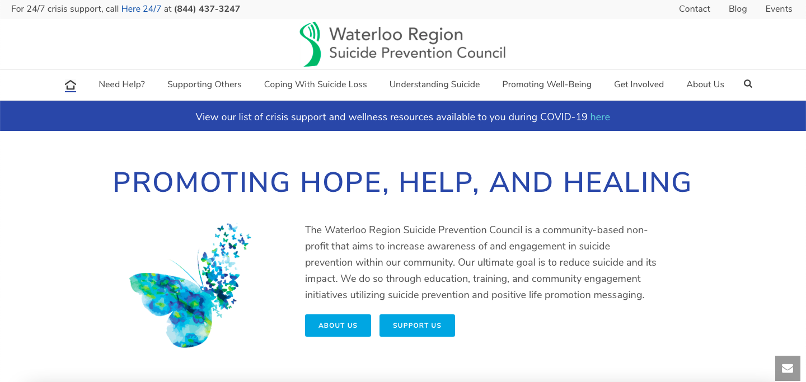
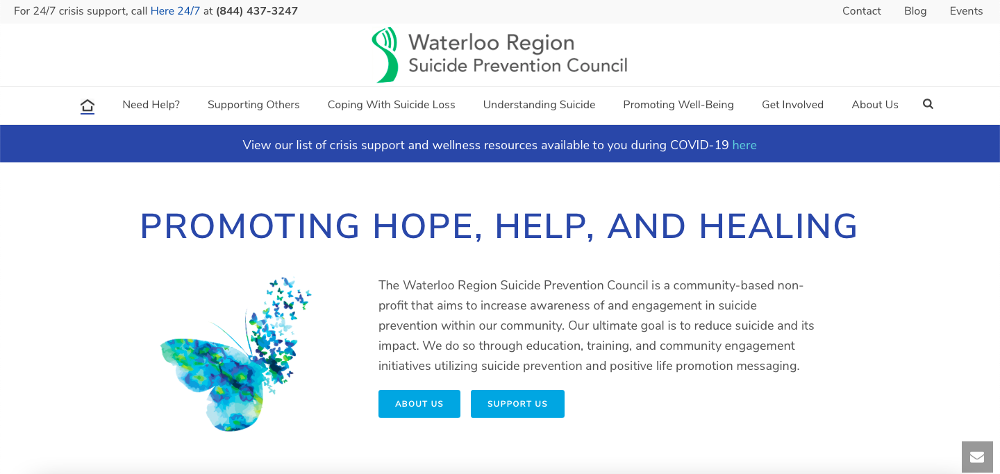
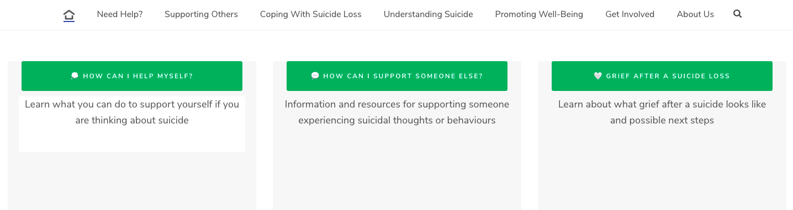
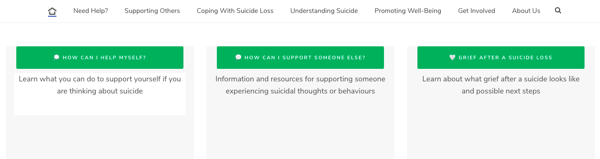

WRSPC Student Placement
.png)
About the Partnership
I had first heard about WRSPC when my web design professor connected my fellow students and I to the program coordinator. We were tasked with creating blog posts which WRSPC would then post on their website blog. Near the end of this course, I contacted the program coordinator to inquire about volunteering in order to gain more experience in the field of design. She agreed and we began working together on graphics and other website content. During this time, Wilfrid Laurier University informed students about a funding opportunity for those currently volunteering. I inquired and was accepted. My position switched from student volunteer to placement student at WRSPC, and my UX work experience journey began!
Goal
The program coordinator of WRSPC and I worked side-by-side to discover what exactly our goal was:
To re-design the WRSPC website so that it is more user-friendly. Primarily focusing on the navigation and secondarily focusing on the aesthetics.
The navigation needed to be user-friendly because website visitors were proven to be individuals under severe stress who are looking for quick and easily accessibly information. Therefore, primary and urgent information needed to be easy to spot, while secondary and other information did not need to be of primary focus.
Aesthetics were also important because the website needed to look appealing to not only attract visitors, but keep them exploring the website to find more important information about suicide.
Software
Wordpress.
Adobe Illustrator.
Initial Research
Initial research was done before user testing to get a look at where the problems within the website were. This allowed us to obtain knowledge and get a more focused direction of what topics to shape user interviews and surveys around.
In order to gain a deeper understanding of the website interface, I conducted a Heuristic Evaluation.
In order to gain a deeper understanding of the users that visit the website, I did the following:
- I visited the website's Google Analytics to review user demographics, allowing me to see the kind of users that visit the website
- I created personas to have a relistic representation of key users
- I created an empathy map to answer the question: What does the user need?
- I created a journey map to help uncover the user's experience while visiting the website
User Testing
We created an in-depth user research plan which outlined our user research methods and expected timeline.
We agreed to proceed with Unmoderated Remote Usability Testing (URUT) and Contextual Inquiry, and only make use of Card Sorting if needed, such as if we did not obtain enough data from the first two methodologies.
These methods were used to uncover user mental models while visiting the navigating through the WRSPC website. The purpose was to uncover the main issues within the website so that we can procede with the re-design.
Unmoderated Remote Usability Testing
URUT was used in the form of an online anonymous survey through SurveyMonkey. The participants were the general public of the Kitchener-Waterloo region who were informed of the survey on WRSPC's social media channels. The participants were provided with tasks to complete on the website on their own time and explain how hard that task was to complete. These tasks were formed around what WRSPC considered to be the most vital information on their website. For example: Please take the time to find our "Why...? Support Group" page. After which a scale of easy to difficult was provided and an optional text area where they could describe why their experience was easy or difficult was also provided.After about two weeks, we were not getting the completion rate expected, so we created a special youth survey for high school students. This survey was advertised on WRSPC's Instagram account with the incentive of one volunteer hour for high school students who fully completed it. This bumped up our responses by a few. We now had enough responses to move on to the Contextual Inquiry phase, where we would form our task questions based on the results of URUT. For example, if a task was easy to complete by everyone who took the survey, we identified it as a non-issue and did not include it into our Contextual Inquiry sessions.
Contextual Inquiry
Issues
Solutions
Redesign: Before and After
1. Home page
Each image displays the before, hover over (desktop) or click (mobile) each image to see the after!
Added and changed features:
- Added home page icon button
- Re-designed a better-looking COVID-19 banner
- Darker text for better accessibility and visibility
- Minimized WRSPC butterfly logo
- Darker buttons for better text visibility
- WRSPC motto made more visible as this is one of the central aspects of the page
 

Added and changed features:
- More visually appealing buttons
- Secondary descriptive text under buttons
- Emoji icons added to buttons
 

Added and changed features:
- Unappealing post thumbnails removed
- LIVE Instagram feed added
- Email subscription area is kept the same, below the Instagram feed
Added and changed features:
- Box added behind text to help with text visibility
- Buttons change background colour when hovered over
- Title text bolded for better visibility
2. Why...? Support Group page
Each image displays the before, hover over (desktop) or click (mobile) each image to see the after!
3.
Each image displays the before, hover over (desktop) or click (mobile) each image to see the after!